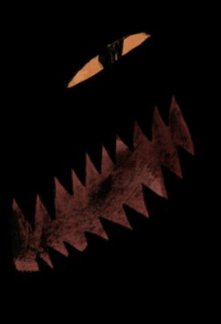
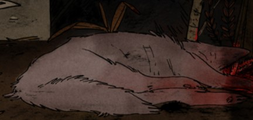
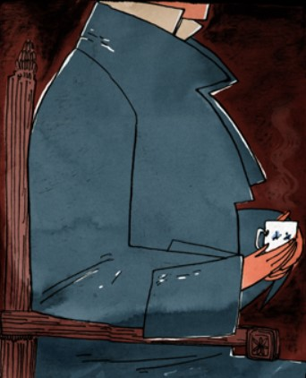
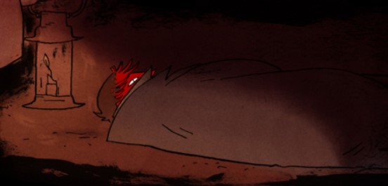
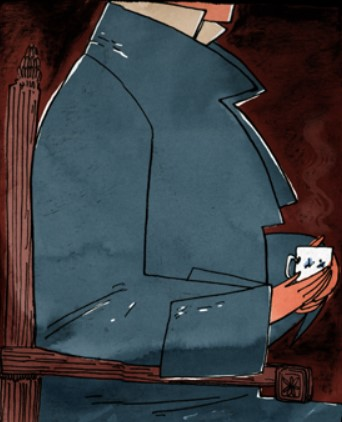
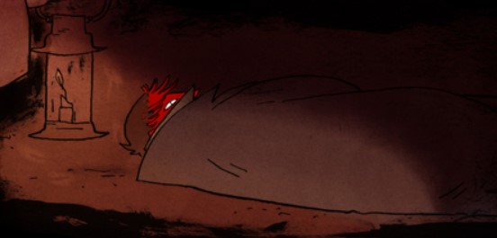
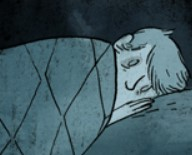
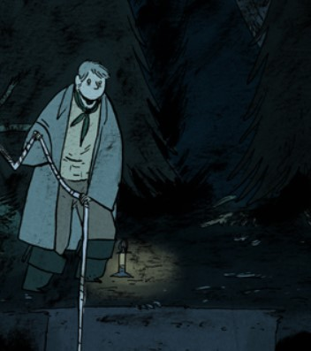
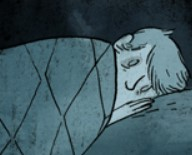
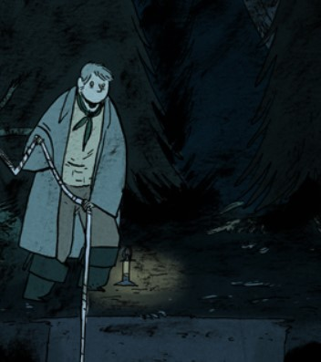

.
  



His Face Is All Red The Story
I en liten pub sitter två bröder, ena brodern sitter ensam...igen. Ingen att prata med, ingen att skratta med och ingen att titta på. Den andra brodern sitter med massor med folk, skrattar, har folk att titta på, har folk som erbjuder honom grejer, har folk som vill prata med honom.
“Det där är inte min broder. Min broder har en stuga med en hagtorns trä och en lila buske. Han har en ung fruga med stjärniga ögon. Min broder har en stilig kofta och en väst med färgen av mossa. Min broder har också en sätt med andra personer som gör honom pålitlig.”
“Den här mannen har alla dom här sakerna, och min broderns ansikte...hans snygga ansikte.”
“Men förra veckan så mördade jag min broder…”
För en hel månad hade deras lilla by varit plågad av en okänd varelse. Den dödade boskap, förstörde staket. Varelsen hade kommit från skogen, som alla andra konstiga saker gör.
“Min broder hade förlorat tre får på en natt, jag var säker för att jag hade inga djur.”
”På stadshuset när jag föreslog att jag kunde jaga varelsen så skrattade alla, tills min broder sa:”
“Vi kan jaga den tillsammans.”
En dag senare så färde bröderna till skogen. Skogen var kall. Det var tyst och mörkt. Bröderna passerade träna som hade lön som såg ut som kvinnohänder och en ström som lätt som hundars morrande. Det fanns också ett håll med ett djup fullt av svart som luktade som lila. Sedan kom den..varelsen.
”Jag gömde mig förr varelsen. Tills jag krälade ut från min gömma så hittade jag min broder.”
”Vi hade redan dödat varelsen, min broder skattade.”
”Det var bara en varg, under alla dessa tider var det bara en varg.”
”Vi båda skrattade på hur jag hade gömt mig och hur tacksamma de andra skulle bli..(till honom).
”Jag hade fått nog av min broder, när han tittade bort så...hög jag honom med vapnet som han dödade vargen med och drog honom till det djupa hålet.”
”Jag tog hem en bit tyg av hans kofta.”
”Jag kom till byn och gav en falsk historia om vad som hände.”
”Vi blev separerade, varelsen måste ha slukat upp honom, tygbiten var det enda jag hitta.”
”Men jag döda varelsen, jag hämnades min broder.”
"Min broders fru kom och höll mig och grät i mina armar nästan hela kvällen."
”Den natten fuktade jag en till attack, men inget kom…”
”Istället tackade folk mig medans som tröstade mig. Jag fick min broders djur och jag sov utan att tänka på något.”
”Tre dagar senare ... kom den "döde" brodern ut ur skogen. (som många konstiga grejer gör)”
Lyckan från alla invånare var stora att brodern hade överlevt...men inte den andra brodern.”
”Men det kunde inte vara min brodern, det kan bara inte var så…”
”Jag kan inte tro att jag blev så vilsen, Jag har levt bredvid den här skogen hela mitt liv!”
”Tack gud för min broder. Tack gode gud han döda den där djävulska varelsen.”
”...och jag var den enda som märkte...hans kofta var okej..den var inte trasig.”
”Jag kan inte längre sova, jag har drömmar om min broderns ansikte helt röd och hans ben orörda. och två gånger har jag vaknar och sett min broder gräva.”
”Är det här skuld? eller är det här min brother, hel, och inte en dubbel? och om det är så…”
”Varför vill han inte titta på mig?”
Nästa natt gick brodern till det djupa hålet för att titta om han broder var där eller inte.
Det brodern ser är en kropp som ligger där helt stilla tills..den vrider huvudet och tittar på brodern med ett helt rött ansikte…”
slut
av Emily Carroll
 


